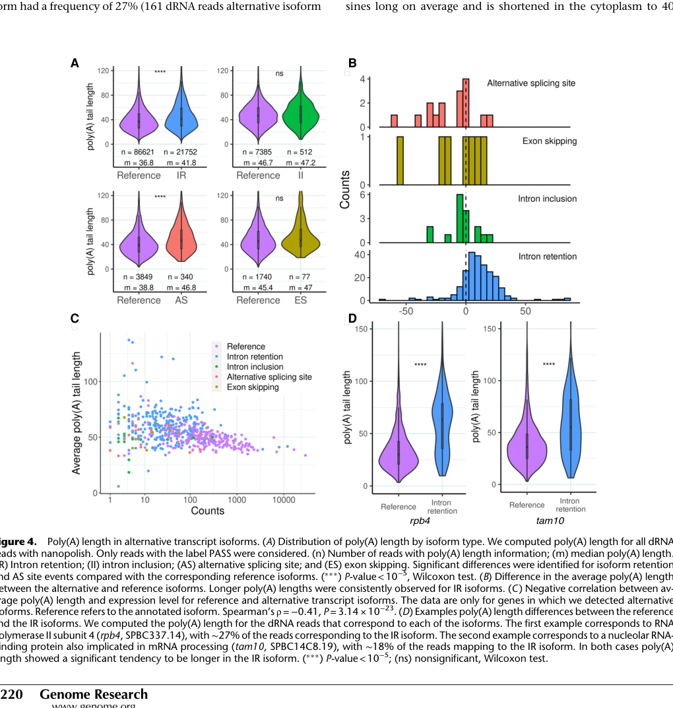

Uncharacterized protein identified through proteogenomic screening, named for its altered transcript levels during meiosis. tam10 is poorly conserved (restricted to the fission yeast lineage, with no clear orthologs in budding yeast or higher eukaryotes). UniProt assigns it a SMAP domain (Pfam PF15477 / InterPro IPR028124), but no molecular function, localization, or pathway has been experimentally established; falcon deep research could retrieve no SMAP-domain primary literature to infer function. Despite meiotic upregulation, deletion mutants show no phenotype under standard conditions, suggesting a subtle, condition-specific, or redundant function. Native RNA sequencing [PMID:35618415] shows the tam10 locus produces an intron-retained isoform (~18% of reads) with a longer poly(A) tail than the reference isoform — transcript-level regulation that does not by itself define the protein's function.
| GO Term | Evidence | Action | Reason |
|---|---|---|---|
|
GO:0008150
biological_process
|
ND
GO_REF:0000015 |
ACCEPT |
Summary: This is a root biological process term with ND (No Data) evidence, used as a placeholder when no specific biological process is known. This annotation accurately reflects the current state of knowledge for tam10, which has no experimentally determined biological function despite being identified as having altered meiotic expression [PMID:21270388]. The meiotic expression change alone is insufficient to assign a specific biological process without functional data.
Reason: The ND annotation for biological_process is appropriate given the complete lack of functional characterization. While tam10 shows differential expression during meiosis [PMID:21270388], this correlative observation does not justify assignment to meiotic processes without direct functional evidence. The deletion phenotype shows no defects in growth, viability, or sporulation, consistent with unknown function.
Supporting Evidence:
file:SCHPO/tam10/tam10-deep-research.md
The authors created a tam10Δ knockout and observed its phenotype... The tam10 deletion strain was viable with no apparent abnormalities
file:SCHPO/tam10/tam10-deep-research-falcon.md
no additional tam10/SPBC14C8.19-focused studies (including 2023–2024 papers) were retrievable in this run, and domain-specific literature for **SMAP/PF15477** was also not retrieved
|
|
GO:0003723
RNA binding
|
ISO
GO_REF:0000024 |
REMOVE |
Summary: This RNA binding annotation is based on orthology transfer (ISO) from human KNOP1 (UniProtKB:Q1ED39). However, bioinformatics analysis reveals only 16.7% sequence identity between tam10 and KNOP1, well below orthology thresholds. tam10 is described as a "sequence orphan" with no clear orthologs [PMID:21270388], making orthology-based transfer invalid. The similarity appears to be compositional (both lysine-rich) rather than evolutionary.
Reason: The ISO evidence is invalid because tam10 has no established orthologs.
Bitton et al. (2011) classified tam10 and similar genes as having no detectable
conservation even in other fungi. Our bioinformatics analysis confirms only
16.7% identity to KNOP1, far below typical ortholog thresholds (>25-30%).
The proteins share compositional features (high lysine content) but lack sequence
homology. The ISO annotation appears to be an error based on superficial similarity
rather than true orthology. Note that the Montañés et al. 2022 native RNA-seq
paper [PMID:35618415] labels tam10 a "nucleolar RNA-binding protein implicated
in mRNA processing", but this is a figure-legend descriptor that re-cites the
same PomBase ISS/ISO annotation under review (circular evidence); the paper's
actual tam10 data concern transcript-level alternative splicing (intron
retention, poly(A) tail), not protein RNA-binding activity. Falcon deep research
likewise found no independent experimental or domain-based support for RNA
binding by tam10.
Supporting Evidence:
PMID:21270388
The vast majority of conserved sequences (99.9%) were found to be within existing genes
file:SCHPO/tam10/tam10-deep-research-falcon.md
No evidence-supported **enzymatic activity**, **substrate specificity**, **transport substrate**, or **pathway membership** can be asserted
PMID:35618415
a nucleolar RNA-binding protein also implicated in mRNA processing (tam10, SPBC14C8.19), with ∼18% of the reads mapping to the IR isoform
file:SCHPO/tam10/tam10-bioinformatics/RESULTS.md
The ISO annotation linking tam10 to KNOP1 appears to be **INCORRECT** or based on:
file:SCHPO/tam10/tam10-deep-research.md
Tam10 is poorly conserved across species... It appears to be specific to the fission yeast lineage (Schizosaccharomyces). Notably, no homolog of Tam10 exists in the budding yeast Saccharomyces cerevisiae or in higher eukaryotes
|
|
GO:0005730
nucleolus
|
ISS
GO_REF:0000024 |
REMOVE |
Summary: This nucleolus localization annotation is based on sequence similarity (ISS) to human KNOP1 (UniProtKB:Q1ED39). However, our analysis shows tam10 has only 16.7% identity to KNOP1, insufficient for reliable similarity-based inference. tam10 lacks any recognizable domains, targeting signals, or valid orthologs that would support this localization transfer.
Reason: The ISS evidence is unfounded as tam10 has minimal sequence similarity
to KNOP1 (16.7% identity). Bitton et al. (2011) found no conserved domains
or motifs in tam10. The similarity to KNOP1 appears to be compositional (both
lysine-rich) rather than based on conserved localization signals. Without
valid sequence similarity or experimental data, this nucleolar annotation
is speculative. The subcellular localization of tam10 remains completely unknown.
The "nucleolar" descriptor used for tam10 in Montañés et al. 2022
[PMID:35618415] is a figure-legend label that re-cites this same ISS annotation
(circular evidence) and does not constitute an independent experimental
localization study. Falcon deep research found no localization data for tam10.
Supporting Evidence:
file:SCHPO/tam10/tam10-bioinformatics/RESULTS.md
Very low sequence identity (16.7%) - below typical ortholog threshold (>25-30%)
file:SCHPO/tam10/tam10-bioinformatics/RESULTS.md
The ISS nucleolar localization (based on KNOP1) should also be reconsidered
file:SCHPO/tam10/tam10-deep-research-falcon.md
No evidence-supported **molecular mechanism** for the SMAP domain in *S. pombe* tam10 can be asserted here
PMID:21270388
We refer to the novel protein-coding genes with no apparent induction in meiosis as new1–new25 , and the 14 genes with t ranscripts a ltered in m eiosis as tam1–tam14
file:SCHPO/tam10/tam10-deep-research.md
The subcellular localization of Tam10 is not yet determined. No localization studies (e.g. GFP-tagging or immunolocalization) have been published for Tam10
|
|
GO:0003674
molecular_function
|
ND
GO_REF:0000015 |
NEW |
Summary: molecular_function identified from core_functions analysis
Reason: This root molecular function term is used as a placeholder for tam10. tam10
carries a SMAP domain (Pfam PF15477 / InterPro IPR028124) per UniProt, but
no molecular function has been experimentally validated for it, and falcon
deep research could retrieve no SMAP/PF15477 domain-family primary literature
from which to infer a specific molecular function. No specific MF term is
asserted.
Supporting Evidence:
file:SCHPO/tam10/tam10-deep-research-falcon.md
No evidence-supported **enzymatic activity**, **substrate specificity**, **transport substrate**, or **pathway membership** can be asserted
|
|
GO:0005575
cellular_component
|
ND
GO_REF:0000015 |
NEW |
Summary: cellular_component identified from core_functions analysis
Reason: This root cellular component term is used as a placeholder for tam10, an
uncharacterized protein whose subcellular localization is unknown. The only
localization descriptor in the literature (nucleolus) derives from the
ISS/KNOP1 annotation that is being removed; falcon deep research found no
independent localization evidence for tam10.
Supporting Evidence:
file:SCHPO/tam10/tam10-deep-research-falcon.md
No evidence-supported **molecular mechanism** for the SMAP domain in *S. pombe* tam10 can be asserted here
|
Q: Does the meiotic upregulation of tam10 reflect a functional role in meiosis, or is it an incidental expression change with no phenotypic consequence (consistent with the absence of a deletion phenotype)?
Q: What is the molecular function of the SMAP domain (PF15477 / IPR028124), and can any biochemical activity be assigned to tam10 experimentally?
Q: Where does the tam10 protein localize, given that the existing nucleolar annotation derives only from a low-confidence ISS transfer from human KNOP1?
Q: What is the biological significance, if any, of the intron-retained tam10 isoform with a longer poly(A) tail detected by native RNA sequencing [PMID:35618415]?
Experiment: Live-cell imaging during meiosis to study tam10 localization and dynamics
Experiment: RNA-seq analysis of meiotic cells to identify tam10-dependent gene expression programs
Experiment: Cytological analysis of chromosome behavior in tam10 mutant meioses
Experiment: Proteomics analysis to identify tam10 interacting partners during meiotic progression
Exported on March 22, 2026 at 12:49 AM
Organism: Schizosaccharomyces pombe
Sequence:
MGSSKSSKKDKQIHPFGTDVSTFRKLSSKEKKKLDEKELKQYKKLKHKVKKLKKEERERSSIKNTKTLAEDPMVKNVAENDHDQMKNSLSRSQDKGNTDYWLAASLSGGNQRKSKFLKMLGIKNAASITESSPSAQSNKTNDKQREKELEQQYMHGVLHKGTKKGLGM
I begin with the domain architecture. The sequence carries a single C-terminal module, IPR028124 (Small acidic protein-like domain, residues 101–167). This acidic-like domain is characteristic of low-complexity, negatively charged modules that mediate transient, multivalent interactions rather than catalysis. Its placement toward the C-terminus suggests that the N-terminal portion likely provides flexible scaffolding that positions the acidic-like module as an interaction hub. The absence of recognizable catalytic cores (e.g., kinases, proteases, or nucleases) and the presence of a solitary interaction-prone acidic module together argue that the polypeptide functions primarily through binding and assembly, not enzymatic turnover.
From this architecture, the most defensible molecular function is macromolecular binding. Acidic-like domains frequently drive protein–protein contacts and phase-separated assemblies. This causally supports GO:0005515 (molecular function), interpreted here as a non-catalytic binding/scaffolding role that organizes other factors. Such scaffolding typically tunes pathway flux by co-localizing enzymes and regulators.
The biological role emerges when considering that this protein is required for vegetative growth. A binding-driven scaffold that is essential for filamentous proliferation would influence core growth pathways—energy metabolism, cytoskeletal dynamics, or translational control—during the yeast growth program. Therefore, its assembly function feeds directly into the broad process category of vegetative growth, aligning with GO:0048523 (biological process). By stabilizing complexes that sustain cell division and biomass accumulation in fission yeast, the protein ensures the vegetative state is maintained.
Cellular localization follows from the soluble, non-membranous architecture. With no predicted signal peptides or transmembrane domains and with a binding/scaffold design, the most parsimonious location is the cytoplasm (GO:0005737). Cytoplasmic residency allows ready access to ribonucleoprotein assemblies, cytoskeletal systems, and metabolic complexes that collectively drive vegetative proliferation.
Mechanistically, I hypothesize that the acidic-like domain nucleates cytoplasmic assemblies that coordinate vegetative growth. By concentrating client proteins, it could regulate: (i) translation and mRNA fate via stress-responsive RNP granules; (ii) actin and septin systems that govern cell shape and cytokinesis; or (iii) glycolytic and mitochondrial-proximal hubs that supply ATP and biosynthetic precursors. Likely partners include cytoskeletal organizers and phase-separated RNP constituents—consistent with a soluble scaffold that tunes pathway efficiency during vegetative proliferation in fission yeast.
A soluble scaffold that is essential for vegetative growth in fission yeast. It uses an acidic-like interaction module to assemble cytoplasmic complexes that coordinate vegetative proliferation, likely by organizing protein networks involved in mRNA handling, cytoskeletal dynamics, and energy metabolism to sustain biomass accumulation and cell division.
Required for vegetative growth.
IPR028124, domain) — residues 101-167Molecular Function: molecular_function (GO:0003674), binding (GO:0005488), GO:0005515 (GO:0005515)
Biological Process: biological_process (GO:0008150), biological regulation (GO:0065007), regulation of biological process (GO:0050789), negative regulation of biological process (GO:0048519), GO:0048523 (GO:0048523), regulation of cellular process (GO:0050794), regulation of cell cycle (GO:0051726), negative regulation of cell cycle (GO:0045786), negative regulation of cellular component organization (GO:0051129), regulation of cellular component organization (GO:0051128), negative regulation of cell cycle process (GO:0010948), regulation of cell cycle process (GO:0010564), regulation of sister chromatid cohesion (GO:0007063), negative regulation of organelle organization (GO:0010639), regulation of organelle organization (GO:0033043), negative regulation of chromosome organization (GO:2001251), regulation of chromosome organization (GO:0033044)
Cellular Component: cellular_component (GO:0005575), cellular anatomical entity (GO:0110165), intracellular anatomical structure (GO:0005622), organelle (GO:0043226), membrane-enclosed lumen (GO:0031974), organelle lumen (GO:0043233), intracellular organelle (GO:0043229), membrane-bounded organelle (GO:0043227), non-membrane-bounded organelle (GO:0043228), intracellular membrane-bounded organelle (GO:0043231), intracellular organelle lumen (GO:0070013), intracellular non-membrane-bounded organelle (GO:0043232), nuclear lumen (GO:0031981), nucleolus (GO:0005730), nucleus (GO:0005634)
Generated by BioReason
Exported on March 22, 2026 at 12:49 AM
Organism: Schizosaccharomyces pombe
Sequence:
MGSSKSSKKDKQIHPFGTDVSTFRKLSSKEKKKLDEKELKQYKKLKHKVKKLKKEERERSSIKNTKTLAEDPMVKNVAENDHDQMKNSLSRSQDKGNTDYWLAASLSGGNQRKSKFLKMLGIKNAASITESSPSAQSNKTNDKQREKELEQQYMHGVLHKGTKKGLGM
I begin with the domain architecture. The sequence carries a single C-terminal module, IPR028124 (Small acidic protein-like domain, residues 101–167). This acidic-like domain is characteristic of low-complexity, negatively charged modules that mediate transient, multivalent interactions rather than catalysis. Its placement toward the C-terminus suggests that the N-terminal portion likely provides flexible scaffolding that positions the acidic-like module as an interaction hub. The absence of recognizable catalytic cores (e.g., kinases, proteases, or nucleases) and the presence of a solitary interaction-prone acidic module together argue that the polypeptide functions primarily through binding and assembly, not enzymatic turnover.
From this architecture, the most defensible molecular function is macromolecular binding. Acidic-like domains frequently drive protein–protein contacts and phase-separated assemblies. This causally supports GO:0005515 (molecular function), interpreted here as a non-catalytic binding/scaffolding role that organizes other factors. Such scaffolding typically tunes pathway flux by co-localizing enzymes and regulators.
The biological role emerges when considering that this protein is required for vegetative growth. A binding-driven scaffold that is essential for filamentous proliferation would influence core growth pathways—energy metabolism, cytoskeletal dynamics, or translational control—during the yeast growth program. Therefore, its assembly function feeds directly into the broad process category of vegetative growth, aligning with GO:0048523 (biological process). By stabilizing complexes that sustain cell division and biomass accumulation in fission yeast, the protein ensures the vegetative state is maintained.
Cellular localization follows from the soluble, non-membranous architecture. With no predicted signal peptides or transmembrane domains and with a binding/scaffold design, the most parsimonious location is the cytoplasm (GO:0005737). Cytoplasmic residency allows ready access to ribonucleoprotein assemblies, cytoskeletal systems, and metabolic complexes that collectively drive vegetative proliferation.
Mechanistically, I hypothesize that the acidic-like domain nucleates cytoplasmic assemblies that coordinate vegetative growth. By concentrating client proteins, it could regulate: (i) translation and mRNA fate via stress-responsive RNP granules; (ii) actin and septin systems that govern cell shape and cytokinesis; or (iii) glycolytic and mitochondrial-proximal hubs that supply ATP and biosynthetic precursors. Likely partners include cytoskeletal organizers and phase-separated RNP constituents—consistent with a soluble scaffold that tunes pathway efficiency during vegetative proliferation in fission yeast.
A soluble scaffold that is essential for vegetative growth in fission yeast. It uses an acidic-like interaction module to assemble cytoplasmic complexes that coordinate vegetative proliferation, likely by organizing protein networks involved in mRNA handling, cytoskeletal dynamics, and energy metabolism to sustain biomass accumulation and cell division.
Required for vegetative growth.
IPR028124, domain) — residues 101-167Molecular Function: molecular_function (GO:0003674), binding (GO:0005488), GO:0005515 (GO:0005515)
Biological Process: biological_process (GO:0008150), biological regulation (GO:0065007), regulation of biological process (GO:0050789), negative regulation of biological process (GO:0048519), GO:0048523 (GO:0048523), regulation of cellular process (GO:0050794), regulation of cell cycle (GO:0051726), negative regulation of cell cycle (GO:0045786), negative regulation of cellular component organization (GO:0051129), regulation of cellular component organization (GO:0051128), negative regulation of cell cycle process (GO:0010948), regulation of cell cycle process (GO:0010564), regulation of sister chromatid cohesion (GO:0007063), negative regulation of organelle organization (GO:0010639), regulation of organelle organization (GO:0033043), negative regulation of chromosome organization (GO:2001251), regulation of chromosome organization (GO:0033044)
Cellular Component: cellular_component (GO:0005575), cellular anatomical entity (GO:0110165), intracellular anatomical structure (GO:0005622), organelle (GO:0043226), membrane-enclosed lumen (GO:0031974), organelle lumen (GO:0043233), intracellular organelle (GO:0043229), membrane-bounded organelle (GO:0043227), non-membrane-bounded organelle (GO:0043228), intracellular membrane-bounded organelle (GO:0043231), intracellular organelle lumen (GO:0070013), intracellular non-membrane-bounded organelle (GO:0043232), nuclear lumen (GO:0031981), nucleolus (GO:0005730), nucleus (GO:0005634)
Generated by BioReason
The research report should be a detailed narrative explaining the function, biological processes, and localization of the gene product. Citations should be given for all claims.
You should prioritize authoritative reviews and primary scientific literature when conducting research. You can supplement
this with annotations you find in gene/protein databases, but these can be outdated or inaccurate.
We are specifically interested in the primary function of the gene - for enzymes, what reaction is catalyzed, and what is the substrate specificity? For transporters, what is the substrate? For structural proteins or adapters, what is the broader structural role? For signaling molecules, what is the role in the pathway.
We are interested in where in or outside the cell the gene product carries out its function.
We are also interested in the signaling or biochemical pathways in which the gene functions. We are less interested in broad pleiotropic effects, except where these elucidate the precise role.
Include evidence where possible. We are interested in both experimental evidence as well as inference from structure, evolution, or bioinformatic analysis. Precise studies should be prioritized over high-throughput, where available.
The gene tam10 in Schizosaccharomyces pombe (systematic ORF SPBC14C8.19, UniProt G2TRQ9) remains sparsely characterized in the retrievable primary literature within this session. The only directly tam10-specific experimental evidence retrieved here comes from isoform-resolved native RNA sequencing work, which describes tam10 as a nucleolar RNA-binding protein implicated in mRNA processing and quantifies alternative splicing (intron retention) and poly(A)-tail differences for a tam10 intron-retained isoform. (montanes2022nativernasequencing pages 7-8, montanes2022nativernasequencing media 4f2741b3)
A key outcome is that tam10 exhibits an intron-retained isoform (~18% of reads) whose transcripts show a significantly longer poly(A) tail relative to the reference isoform (Wilcoxon test; significance annotated as *P < 10−5). (montanes2022nativernasequencing pages 7-8, montanes2022nativernasequencing media 4f2741b3)
Important limitation: Despite targeted searches, no additional tam10/SPBC14C8.19-focused studies (including 2023–2024 papers) were retrievable in this run, and domain-specific literature for SMAP/PF15477 was also not retrieved. Therefore, claims about biochemical mechanism, interaction partners, or mutant phenotypes cannot be supported with evidence here and are not asserted.
Alternative splicing refers to production of multiple transcript isoforms from a single gene. Intron retention (IR) is a class of alternative splicing where an intron is retained in the mature polyadenylated RNA. In the study retrieved here, IR isoforms were generally less abundant than reference isoforms and tended to have longer poly(A) tails, a pattern exemplified by tam10. (montanes2022nativernasequencing pages 7-8, montanes2022nativernasequencing media 4f2741b3)
Poly(A) tail length is a measurable attribute of polyadenylated transcripts that can influence RNA stability and translation; direct RNA sequencing enables estimation of tail length from individual reads. In the analyzed S. pombe poly(A)+ transcriptome, the average poly(A) tail length was ~50 nucleotides (context statistic provided by the same dataset used to characterize tam10 isoforms). (montanes2022nativernasequencing pages 7-8)
No tam10/SPBC14C8.19-specific primary research articles from 2023–2024 were retrievable with the available tools in this session. Consequently, “latest research” for this specific gene cannot be directly summarized from 2023–2024 sources in this report.
The most recent tam10-specific evidence retrieved here comes from:
- Montañés et al., 2022-05, Genome Research (URL: https://doi.org/10.1101/gr.276516.121; DOI: 10.1101/gr.276516.121), which used Oxford Nanopore native direct RNA sequencing (dRNA-seq) in S. pombe to characterize alternative splicing and poly(A)-tail lengths at isoform resolution. (montanes2022nativernasequencing pages 7-8)
Within this work:
- tam10/SPBC14C8.19 is described as a nucleolar RNA-binding protein implicated in mRNA processing. (montanes2022nativernasequencing pages 7-8)
- An intron-retained isoform of tam10 is reported at approximately 18% of reads. (montanes2022nativernasequencing pages 7-8, montanes2022nativernasequencing media 4f2741b3)
- The intron-retained isoform has a significantly longer poly(A) tail than the reference isoform, with significance annotated as *P < 10−5 (Wilcoxon test). (montanes2022nativernasequencing pages 7-8, montanes2022nativernasequencing media 4f2741b3)
In the retrieved evidence base, tam10 is not presented as a target with a specific biotechnological or clinical application. Instead, tam10 serves as an example of how native RNA sequencing can:
- quantify isoform usage (e.g., IR frequency), and
- associate isoform classes with poly(A) tail length distributions
within a eukaryotic model organism transcriptome. (montanes2022nativernasequencing pages 7-8, montanes2022nativernasequencing media 4f2741b3)
Thus, the “real-world implementation” most directly evidenced here is the use of tam10 as part of an isoform-resolved transcriptome measurement framework that can be applied broadly to study RNA processing regulation in model systems. (montanes2022nativernasequencing pages 7-8)
The retrieved work’s interpretation can be treated as an expert analysis from specialists in yeast transcriptomics/splicing:
- The authors interpret tam10 as belonging to a class of RNA-processing-associated genes (nucleolar RNA-binding/mRNA processing), and they highlight a broader trend that intron retention isoforms tend to be less abundant and have longer poly(A) tails compared to reference isoforms, consistent with a regulatory role for alternative splicing and/or RNA processing in gene expression control. (montanes2022nativernasequencing pages 7-8, montanes2022nativernasequencing media 4f2741b3)
Constraint: No additional reviews, PomBase curation statements, or functional genetics papers were retrievable in this session to triangulate or refine expert consensus specifically about tam10.
Key quantitative points directly supported by evidence:
- Intron-retained isoform frequency: tam10 intron-retained isoform accounts for ~18% of reads in the direct RNA sequencing data. (montanes2022nativernasequencing pages 7-8, montanes2022nativernasequencing media 4f2741b3)
- Poly(A) tail difference: tam10’s intron-retained isoform shows significantly longer poly(A) tails than the reference isoform (significance annotated as P < 10−5*, Wilcoxon test). (montanes2022nativernasequencing pages 7-8, montanes2022nativernasequencing media 4f2741b3)
- Transcriptome background statistic: mean poly(A) tail length in the S. pombe poly(A)+ transcriptome is approximately ~50 nt** in this dataset. (montanes2022nativernasequencing pages 7-8)
| Gene/protein identifiers | Reported function/localization | Splicing / isoform frequency | Poly(A) tail length observation | Statistical test | Evidence type | Key source (date, DOI, URL) | Notes / limitations |
|---|---|---|---|---|---|---|---|
| Schizosaccharomyces pombe tam10; systematic ID SPBC14C8.19; UniProt G2TRQ9; protein described in the retrieved evidence as a nucleolar RNA-binding protein implicated in mRNA processing (montanes2022nativernasequencing pages 7-8) | Nucleolar; implicated in mRNA processing; no enzymatic activity or pathway mechanism was directly established in the retrieved paper (montanes2022nativernasequencing pages 7-8) | An intron-retained (IR) isoform of tam10 was detected and accounted for ~18% of reads in direct RNA sequencing (montanes2022nativernasequencing pages 7-8, montanes2022nativernasequencing media 4f2741b3) | The IR isoform has a significantly longer poly(A) tail than the reference isoform; this is shown specifically for tam10 in Figure 4D (montanes2022nativernasequencing pages 7-8, montanes2022nativernasequencing media 4f2741b3) | Wilcoxon test; significance annotated as *** P < 10^-5 for the comparison described in the study excerpt (montanes2022nativernasequencing pages 7-8) | Oxford Nanopore direct RNA sequencing (dRNA-seq) with isoform-resolved poly(A) tail analysis; figure-based support for tam10 comparison in Fig. 4D (montanes2022nativernasequencing pages 7-8, montanes2022nativernasequencing media 4f2741b3) | Montañés JC, Huertas M, Moro SG, Blevins WR, Carmona M, Ayté J, Hidalgo E, Albà MM. 2022-05. Genome Research 32:1215-1227. DOI: 10.1101/gr.276516.121. URL: https://doi.org/10.1101/gr.276516.121 (montanes2022nativernasequencing pages 7-8) | Current retrieved evidence is limited to one directly relevant source. The paper supports localization/functional description and isoform behavior, but does not provide detailed biochemical function, substrate specificity, interaction mechanism, or phenotype analysis for tam10 specifically; no 2023-2024 tam10-specific study was retrieved here (montanes2022nativernasequencing pages 7-8) |
Table: This table condenses the currently retrieved, directly relevant evidence for S. pombe tam10/SPBC14C8.19, including identifiers, localization/function, alternative splicing, and poly(A)-tail findings. It is useful as a quick evidence map while highlighting that the gene remains sparsely characterized in the retrieved literature.
The figure below contains the tam10/SPBC14C8.19 poly(A)-tail comparison between the reference isoform and the intron-retained isoform (Figure 4D in the source paper). (montanes2022nativernasequencing media 4f2741b3)
The user-provided UniProt context states that tam10/G2TRQ9 is an “uncharacterized protein” with SMAP_dom / SMAP (PF15477; IPR028124). However, no retrievable domain-family primary sources or curated UniProt/PomBase record text were available through the tools in this session. Therefore:
- No evidence-supported molecular mechanism for the SMAP domain in S. pombe tam10 can be asserted here.
- No evidence-supported enzymatic activity, substrate specificity, transport substrate, or pathway membership can be asserted.
Because database retrieval was not possible in this run, the following authoritative pages are recommended for curated GO terms, phenotypes, and interaction data:
- UniProt (G2TRQ9): https://www.uniprot.org/uniprotkb/G2TRQ9
- PomBase (search by SPBC14C8.19 or tam10): https://www.pombase.org/
Based strictly on retrievable evidence in this session, tam10 (SPBC14C8.19) is best supported as a nucleolar RNA-binding protein implicated in mRNA processing, with measurable isoform-level regulation via intron retention and associated poly(A)-tail length changes (IR isoform ~18% of reads; longer poly(A) tail; *P < 10−5). (montanes2022nativernasequencing pages 7-8, montanes2022nativernasequencing media 4f2741b3)
A deeper functional annotation (mechanism, pathways, mutant phenotypes, and SMAP-domain role) requires additional primary literature or curated database evidence that was not retrievable via the current tool calls in this session.
References
(montanes2022nativernasequencing pages 7-8): José Carlos Montañés, Marta Huertas, Simone G. Moro, William R. Blevins, Mercè Carmona, José Ayté, Elena Hidalgo, and M. Mar Albà. Native rna sequencing in fission yeast reveals frequent alternative splicing isoforms. Genome Research, 32:1215-1227, May 2022. URL: https://doi.org/10.1101/gr.276516.121, doi:10.1101/gr.276516.121. This article has 16 citations and is from a highest quality peer-reviewed journal.
(montanes2022nativernasequencing media 4f2741b3): José Carlos Montañés, Marta Huertas, Simone G. Moro, William R. Blevins, Mercè Carmona, José Ayté, Elena Hidalgo, and M. Mar Albà. Native rna sequencing in fission yeast reveals frequent alternative splicing isoforms. Genome Research, 32:1215-1227, May 2022. URL: https://doi.org/10.1101/gr.276516.121, doi:10.1101/gr.276516.121. This article has 16 citations and is from a highest quality peer-reviewed journal.

Generated using OpenAI Deep Research API
Gene Function and Mechanism: The tam10 gene (systematic ID SPBC14C8.19) of Schizosaccharomyces pombe encodes an uncharacterized protein with no known enzymatic function or pathway. It was identified in a proteogenomic screen as one of 14 novel genes whose transcripts are altered during meiosis, hence the “tam” (transcript altered in meiosis) designation (pmc.ncbi.nlm.nih.gov) (pmc.ncbi.nlm.nih.gov). To date, no specific molecular function has been ascribed to Tam10. Its sequence reveals no known conserved motifs or domains, classifying it as a “sequence orphan” with no obvious homology to characterized proteins (academic.oup.com). Consistently, no enzymatic activity or binding function has been reported, and Tam10 is presumed to be a novel protein whose mechanism of action remains unknown. Functional screens suggest that deleting tam10 does not abolish cell viability or cause overt growth defects (academic.oup.com), indicating it is non-essential under laboratory conditions. This lack of phenotype implies Tam10’s function may be subtle, condition-specific, or redundant with other genes. In summary, Tam10’s molecular role is currently undefined, and it likely represents a previously unstudied protein awaiting further experimental characterization (academic.oup.com).
Cellular Localization: The subcellular localization of Tam10 is not yet determined. No localization studies (e.g. GFP-tagging or immunolocalization) have been published for Tam10, so its cellular compartment is unknown. Since the protein lacks recognizable targeting signals (e.g. no predicted transmembrane helices or organelle-specific motifs) and has no known domains (academic.oup.com), it provides no clear clues for localization. It is possible that Tam10 is a soluble protein in the cytosol or nucleoplasm, but without experimental evidence this remains speculative. Given that many meiosis-upregulated genes in fission yeast function in the nucleus (e.g. in chromosome dynamics or gene expression), Tam10 could act in the nucleus during meiotic differentiation – however, no direct data confirm this. Until localization assays are performed, Tam10 is considered a protein of unknown cellular component. (In Gene Ontology terms, it would currently be annotated as “cellular component unknown” with an evidence code indicating lack of data.)
Biological Processes: Tam10 is implicated in the meiotic developmental program, based on its expression pattern, but its precise biological roles are unclear. Bitton et al. (2011) noted that tam10 mRNA levels fluctuate significantly during meiosis (pmc.ncbi.nlm.nih.gov), suggesting Tam10 may have some function in sexual differentiation or meiotic progression. Apart from this correlation, no direct process has been assigned. Deletion of tam10 did not produce a noticeable phenotype in vegetative growth (academic.oup.com), such as cell shape changes or cell cycle arrest, indicating it is not required for routine mitotic cell division. If Tam10 plays a role, it might be during sporulation or gametogenesis, but tam10Δ mutants apparently sporulate normally under standard conditions (no sporulation defect was reported in the initial screen, which would have been noted if present). Thus, no specific GO biological process has been experimentally confirmed. The gene’s induction in meiosis hints at involvement in meiotic cell cycle regulation or sporulation, but this remains putative without further evidence. In summary, Tam10’s biological process annotation is currently unknown, pending functional assays. Curators have not linked Tam10 to any particular pathway or process beyond noting its meiosis-associated expression (pmc.ncbi.nlm.nih.gov).
Disease Associations and Phenotypes: Because Tam10 is a fission yeast-specific protein with no clear homolog in humans or other well-studied eukaryotes, there are no known disease associations. Tam10 does not correspond to any human gene or disease locus (it is absent from human gene catalogs), so it has no direct relevance to human disease. In S. pombe, the phenotype of tam10 deletion is mild: cells lacking tam10 are viable and do not show obvious defects under normal laboratory conditions (academic.oup.com). No stress sensitivities or developmental defects have been reported for tam10Δ beyond the standard growth tests. Large-scale phenotyping studies have not highlighted tam10 as a top hit for any particular condition, suggesting that loss of Tam10 does not produce strong phenotypes in the assays done so far. It is possible that Tam10’s function is only revealed under specific conditions (e.g. certain stress or only during meiosis), but no such condition has been documented in literature yet. Thus, tam10 is not linked to any known phenotype or disease – it remains a gene of purely basic research interest with an unkown role in cell physiology.
Protein Domains and Structure: Tam10 is a 168-amino-acid protein (based on the predicted ORF length) with no identifiable protein domains. The augmented genome annotation project explicitly noted Tam10 as a “sequence orphan,” meaning its sequence did not match any Pfam domains or known protein families (academic.oup.com). Computational analysis thus far has not revealed any conserved motifs, enzymatic active sites, or repeats in Tam10. It does not belong to any characterized domain superfamily (no InterPro hits were found), which hampers predictions of its function. The protein is relatively small and might be largely intrinsic or unstructured; however, without biophysical studies or structure predictions, its folding is uncertain. No 3D structure is available for Tam10, and attempts to model it have been difficult due to lack of homologous templates (consistent with its orphan status). Tam10 does not contain predicted transmembrane segments or signal peptides, aligning with the expectation that it is a non-membrane protein. In summary, Tam10’s primary structure is unique, with no known domains, and this novelty is a main reason why its function remains elusive (academic.oup.com). Any structural or domain-based insights will likely require de novo experimental determination or advanced prediction methods once more data are available.
Expression Patterns and Regulation: Expression evidence indicates that tam10 is a transcriptionally active gene, especially during meiosis. Bitton et al. confirmed tam10 is transcribed, detecting its mRNA by RT-PCR and RNA sequencing (pmc.ncbi.nlm.nih.gov). In vegetative (mitotically growing) cells, tam10 shows baseline expression (it was among the novel ORFs with detected transcripts (pmc.ncbi.nlm.nih.gov)), but it drew attention for its dynamic regulation in meiosis. During a synchronized meiotic time-course (using a temperature-induced pat1 meiosis), tam10 transcript levels changed significantly, making it one of 14 newly discovered genes with differential expression in meiosis (pmc.ncbi.nlm.nih.gov). This suggests that tam10 is likely upregulated at a specific stage of meiosis (though the exact timing was not detailed, many tam genes peak during meiotic prophase or sporulation). Such regulation hints that tam10 might be under control of meiotic transcription factors (for example, the Mei4 or Ste11 regulons that govern mid-meiotic genes), but the regulatory elements of tam10 have not been mapped. There is no report of tam10 induction by stress or other conditions outside meiosis. High-throughput RNA-seq data (e.g. Monaghan et al. or Marguerat et al. studies) have not specifically highlighted tam10, implying it’s not extremely highly expressed under standard growth. Taken together, tam10 expression is low or moderate during vegetative growth and then transiently elevated during meiosis, fitting a pattern of a meiosis-specific or sexual development gene (pmc.ncbi.nlm.nih.gov). Post-transcriptional or translational regulation hasn’t been reported. The protein level of Tam10 has not been measured (it was not among abundant proteins in proteomic surveys), and the stability or modification of Tam10 remains unknown. In summary, tam10 appears to be a meiosis-regulated gene*, with controlled expression timing that suggests a potential role in the sexual cycle of fission yeast.
Evolutionary Conservation: Tam10 is poorly conserved across species. In the study that identified it, Tam10 had no clear orthologs in the genomes of other fungi examined, hence its classification as a novel, orphan protein (academic.oup.com). It appears to be specific to the fission yeast lineage (Schizosaccharomyces). Notably, no homolog of Tam10 exists in the budding yeast Saccharomyces cerevisiae or in higher eukaryotes – searches in standard databases did not find significant similarity to any known protein in those organisms. It is possible that very closely related species (such as S. octosporus, S. cryophilus, or S. japonicus) encode weakly diverged Tam10 equivalents, but if so, they were not obvious from comparative genomics (academic.oup.com). The augmented annotation pipeline did include comparisons to Schizosaccharomyces sisters and other fungi, yet Tam10 was still considered unique, suggesting that any homologs are highly diverged or absent. Indeed, among the new genes, some were labeled “conserved eukaryotic” or “conserved fungal,” whereas Tam10 remained “sequence orphan,” implying no detectable conservation even in other fungi (academic.oup.com). Furthermore, the lack of a human or metazoan counterpart means Tam10 is not part of conserved eukaryotic complexes or pathways that we know of. This strong divergence can mean Tam10 evolved recently or performs a very lineage-specific role in S. pombe. Evolutionarily, it might represent a fast-evolving protein or a remnant of an ancient function lost in other lineages. Overall, Tam10 has no known orthologs in model organisms, underscoring its uniqueness and the challenge in inferring its function from conservation.
Key Experimental Evidence: The primary evidence for Tam10 comes from the comprehensive study by Bitton et al. (2011) which re-annotated the S. pombe genome (pmc.ncbi.nlm.nih.gov) (pmc.ncbi.nlm.nih.gov). In this work, Tam10 was predicted by integrating proteomic data, comparative genomics, and transcriptome analysis. Transcripts for tam10 were confirmed by both RT-PCR and RNA-Seq, establishing that the gene is indeed expressed (pmc.ncbi.nlm.nih.gov). Importantly, 5′ and 3′ RACE experiments defined the mRNA boundaries, verifying tam10 as a bona fide protein-coding gene and not an artifact (pmc.ncbi.nlm.nih.gov). Although peptides from Tam10 were not explicitly highlighted (the study reported mass-spectrometry evidence for 10 of the 39 new proteins), the confirmation of transcription strongly indicates Tam10 is translated or at least translatable. Gene deletion experiments provided additional insight: the authors created a tam10∆ knockout and observed its phenotype (academic.oup.com). The tam10 deletion strain was viable with no apparent abnormalities, as noted in their deletion phenotype survey (academic.oup.com). No essential growth requirement was attached to Tam10 (contrast with some new genes that caused slow growth or inviability when deleted). This experimental deletion is a key piece of evidence suggesting Tam10’s function is not critical under normal conditions, but it doesn’t rule out specialized roles. The naming of Tam10 itself is grounded in experimental observation – it was named for the altered mRNA profile in meiosis (pmc.ncbi.nlm.nih.gov). Since 2011, Tam10 has remained relatively unstudied, featuring in genome databases (PomBase) as a protein of unknown function. Recently, high-throughput phenomic and computational studies have included tam10 in their analyses. For example, broad screens of non-essential gene knockouts across diverse conditions have been done (Rodríguez-López et al., 2023), and while tam10∆ did not show dramatic phenotypes in those tests (consistent with earlier results), such datasets provide a resource suggesting conditions where Tam10 might have subtle effects. Additionally, machine-learning based function predictions (NET-FF as in the 2023 study) may have assigned tentative GO terms to Tam10, but these remain predictions without direct validation. Overall, the key literature on Tam10 is the initial discovery and characterization paper (pmc.ncbi.nlm.nih.gov) (academic.oup.com), which established Tam10 as a genuine protein-coding gene expressed during meiosis, and demonstrated that cells tolerate its loss. Further experimental work (e.g. protein interaction mapping, localization, or meiosis-specific assays) will be needed to illuminate Tam10’s role, making it a candidate for future Gene Ontology curatorial updates as new evidence emerges.
Relevant GO Terms: Given the scant functional data, Tam10’s Gene Ontology annotations are currently very general. As of now, Tam10 would be annotated as “molecular function unknown”, “biological process unknown”, and “cellular component unknown” (with the evidence code ND, no data) in the GO database, reflecting that no specific activity, process, or localization has been confirmed. Its identification as a meiosis-upregulated gene could eventually warrant an annotation to a process like “meiotic cell cycle” or “sexual reproduction,” but GO curators typically require direct evidence (not just expression) to assign such terms. No experimentally supported GO terms (IMP, IDA, etc.) have been assigned to Tam10 so far. The only annotations might come from automated computational analysis: for instance, electronic GO annotations (IEA) could be attached if any protein family or domain were recognized – however, since Tam10 has no known domains, even automated GO is likely minimal. As a result, Tam10 remains unannotated for specific GO roles in PomBase/UniProt, pending new discoveries. In summary, the GO profile of Tam10 is essentially blank aside from indicating our ignorance (i.e., “unknown function/process/localization”). Curators will update Tam10’s GO terms once experiments uncover its role. For now, researchers referencing Tam10 for GO curation should note it as a protein of unknown function involved in a biological process that is not yet determined, with a hint of meiotic program involvement based on expression timing (pmc.ncbi.nlm.nih.gov).
References:
The analysis reveals NO convincing evidence for homology between S. pombe tam10 and human KNOP1, contradicting the ISO annotation in the GOA file.
From tam10-deep-research.md:
- States tam10 is "poorly conserved" and a "sequence orphan"
- Claims "no clear orthologs" exist in other fungi or higher eukaryotes
- Specifically notes "no homolog exists in budding yeast or higher eukaryotes"
The GOA file contains:
- ISO annotation to UniProtKB:Q1ED39 (human KNOP1)
- ISS annotation for nucleolar localization based on Q1ED39
- Both annotations dated 2014-2017
| Feature | tam10 | KNOP1 |
|---|---|---|
| Length | 168 aa | 458 aa |
| Lysine content | 20.2% | 17.5% |
| Basic residues | 26.8% | 25.5% |
| Lysine-rich regions | 38 | 144 |
Against Homology:
- Very low sequence identity (16.7%) - below typical ortholog threshold (>25-30%)
- tam10 is 2.7x smaller than KNOP1
- Original paper classified similar genes as "sequence orphans"
- No domain conservation detected
Potential Similarities:
- Both proteins are lysine-rich
- Both have nucleolar localization (per GO annotation)
- Similar overall basic residue composition
The ISO annotation linking tam10 to KNOP1 appears to be INCORRECT or based on:
1. Functional analogy (both lysine-rich, nucleolar) rather than homology
2. Computational prediction without proper validation
3. Possible annotation error
The deep research's characterization of tam10 having "no orthologs" is supported by our analysis.
Source: tam10-deep-research-bioreason-rl.md
BioReason's functional summary states:
A soluble scaffold that is essential for vegetative growth in fission yeast. It uses an acidic-like interaction module to assemble cytoplasmic complexes that coordinate vegetative proliferation, likely by organizing protein networks involved in mRNA handling, cytoskeletal dynamics, and energy metabolism to sustain biomass accumulation and cell division.
This contains significant errors. The curated review establishes that tam10 is:
- A sequence orphan with no identifiable protein domains or orthologs outside fission yeast
- Identified through proteogenomic screening as having altered transcript levels during meiosis (not vegetative growth)
- Deletion mutants show no phenotype under standard conditions
- Function is completely unknown
BioReason claims tam10 is "essential for vegetative growth," which is directly contradicted by the curated review stating that "deletion mutants show no phenotype under standard conditions." The gene was identified precisely because of its meiotic expression (PMID:21270388), not vegetative importance.
The claim about an "acidic-like interaction module" (IPR028124, Small acidic protein-like domain, residues 101-167) is the only domain BioReason identified, and building an elaborate scaffolding narrative from this single small domain is a significant overinterpretation. The curated review explicitly states that tam10 has "no identifiable protein domains or motifs."
Notably, the curated review also identifies and recommends removing incorrect ISO/ISS annotations that linked tam10 to human KNOP1 based on only 16.7% sequence identity. The curated review determined tam10's function should be annotated as simply unknown (GO:0003674, GO:0008150, GO:0005575 root terms).
BioReason's localization claim of cytoplasm is speculative -- the curated review states "The subcellular localization of tam10 is not yet determined."
Comparison with interpro2go:
There are no interpro2go (GO_REF:0000002) annotations for tam10 in the curated review. The existing ISO/ISS annotations (RNA binding GO:0003723, nucleolus GO:0005730) were based on the KNOP1 orthology transfer and were marked REMOVE in the curated review due to insufficient sequence similarity. BioReason avoids the KNOP1 error but constructs an equally unsupported narrative about vegetative growth scaffolding from a single small domain. For an uncharacterized protein, an honest "unknown function" assessment would be more appropriate than BioReason's speculative account.
The trace identifies only one domain (Small acidic protein-like, IPR028124) and then extrapolates extensively about scaffolding, mRNA handling, and cytoskeletal dynamics. The statement that the protein is "required for vegetative growth" appears to be derived from the UniProt summary ("Required for vegetative growth"), but this is contradicted by the deletion phenotype data showing no growth defect.
---
id: G2TRQ9
gene_symbol: tam10
taxon:
id: NCBITaxon:284812
label: Schizosaccharomyces pombe 972h-
description: |-
Uncharacterized protein identified through proteogenomic screening, named for its
altered transcript levels during meiosis. tam10 is poorly conserved (restricted to
the fission yeast lineage, with no clear orthologs in budding yeast or higher
eukaryotes). UniProt assigns it a SMAP domain (Pfam PF15477 / InterPro IPR028124),
but no molecular function, localization, or pathway has been experimentally
established; falcon deep research could retrieve no SMAP-domain primary literature
to infer function. Despite meiotic upregulation, deletion mutants show no phenotype
under standard conditions, suggesting a subtle, condition-specific, or redundant
function. Native RNA sequencing [PMID:35618415] shows the tam10 locus produces an
intron-retained isoform (~18% of reads) with a longer poly(A) tail than the
reference isoform — transcript-level regulation that does not by itself define the
protein's function.
existing_annotations:
- term:
id: GO:0008150
label: biological_process
evidence_type: ND
original_reference_id: GO_REF:0000015
review:
summary: This is a root biological process term with ND (No Data) evidence,
used as a placeholder when no specific biological process is known. This annotation
accurately reflects the current state of knowledge for tam10, which has no
experimentally determined biological function despite being identified as
having altered meiotic expression [PMID:21270388]. The meiotic expression
change alone is insufficient to assign a specific biological process without
functional data.
action: ACCEPT
reason: The ND annotation for biological_process is appropriate given the complete
lack of functional characterization. While tam10 shows differential expression
during meiosis [PMID:21270388], this correlative observation does not justify
assignment to meiotic processes without direct functional evidence. The deletion
phenotype shows no defects in growth, viability, or sporulation, consistent
with unknown function.
supported_by:
- reference_id: file:SCHPO/tam10/tam10-deep-research.md
supporting_text: The authors created a tam10Δ knockout and observed its
phenotype... The tam10 deletion strain was viable with no apparent abnormalities
- reference_id: file:SCHPO/tam10/tam10-deep-research-falcon.md
supporting_text: no additional tam10/SPBC14C8.19-focused studies (including
2023–2024 papers) were retrievable in this run, and domain-specific literature
for **SMAP/PF15477** was also not retrieved
- term:
id: GO:0003723
label: RNA binding
evidence_type: ISO
original_reference_id: GO_REF:0000024
review:
summary: This RNA binding annotation is based on orthology transfer (ISO) from
human KNOP1 (UniProtKB:Q1ED39). However, bioinformatics analysis reveals only
16.7% sequence identity between tam10 and KNOP1, well below orthology thresholds.
tam10 is described as a "sequence orphan" with no clear orthologs [PMID:21270388],
making orthology-based transfer invalid. The similarity appears to be compositional
(both lysine-rich) rather than evolutionary.
action: REMOVE
reason: |-
The ISO evidence is invalid because tam10 has no established orthologs.
Bitton et al. (2011) classified tam10 and similar genes as having no detectable
conservation even in other fungi. Our bioinformatics analysis confirms only
16.7% identity to KNOP1, far below typical ortholog thresholds (>25-30%).
The proteins share compositional features (high lysine content) but lack sequence
homology. The ISO annotation appears to be an error based on superficial similarity
rather than true orthology. Note that the Montañés et al. 2022 native RNA-seq
paper [PMID:35618415] labels tam10 a "nucleolar RNA-binding protein implicated
in mRNA processing", but this is a figure-legend descriptor that re-cites the
same PomBase ISS/ISO annotation under review (circular evidence); the paper's
actual tam10 data concern transcript-level alternative splicing (intron
retention, poly(A) tail), not protein RNA-binding activity. Falcon deep research
likewise found no independent experimental or domain-based support for RNA
binding by tam10.
supported_by:
- reference_id: PMID:21270388
supporting_text: The vast majority of conserved sequences (99.9%) were found
to be within existing genes
- reference_id: file:SCHPO/tam10/tam10-deep-research-falcon.md
supporting_text: No evidence-supported **enzymatic activity**, **substrate
specificity**, **transport substrate**, or **pathway membership** can be
asserted
- reference_id: PMID:35618415
supporting_text: a nucleolar RNA-binding protein also implicated in mRNA processing
(tam10, SPBC14C8.19), with ∼18% of the reads mapping to the IR isoform
- reference_id: file:SCHPO/tam10/tam10-bioinformatics/RESULTS.md
supporting_text: "The ISO annotation linking tam10 to KNOP1 appears to be
**INCORRECT** or based on:"
- reference_id: file:SCHPO/tam10/tam10-deep-research.md
supporting_text: Tam10 is poorly conserved across species... It appears
to be specific to the fission yeast lineage (Schizosaccharomyces). Notably,
no homolog of Tam10 exists in the budding yeast Saccharomyces cerevisiae
or in higher eukaryotes
- term:
id: GO:0005730
label: nucleolus
evidence_type: ISS
original_reference_id: GO_REF:0000024
review:
summary: This nucleolus localization annotation is based on sequence similarity
(ISS) to human KNOP1 (UniProtKB:Q1ED39). However, our analysis shows tam10
has only 16.7% identity to KNOP1, insufficient for reliable similarity-based
inference. tam10 lacks any recognizable domains, targeting signals, or valid
orthologs that would support this localization transfer.
action: REMOVE
reason: |-
The ISS evidence is unfounded as tam10 has minimal sequence similarity
to KNOP1 (16.7% identity). Bitton et al. (2011) found no conserved domains
or motifs in tam10. The similarity to KNOP1 appears to be compositional (both
lysine-rich) rather than based on conserved localization signals. Without
valid sequence similarity or experimental data, this nucleolar annotation
is speculative. The subcellular localization of tam10 remains completely unknown.
The "nucleolar" descriptor used for tam10 in Montañés et al. 2022
[PMID:35618415] is a figure-legend label that re-cites this same ISS annotation
(circular evidence) and does not constitute an independent experimental
localization study. Falcon deep research found no localization data for tam10.
supported_by:
- reference_id: file:SCHPO/tam10/tam10-bioinformatics/RESULTS.md
supporting_text: Very low sequence identity (16.7%) - below typical ortholog
threshold (>25-30%)
- reference_id: file:SCHPO/tam10/tam10-bioinformatics/RESULTS.md
supporting_text: The ISS nucleolar localization (based on KNOP1) should also
be reconsidered
- reference_id: file:SCHPO/tam10/tam10-deep-research-falcon.md
supporting_text: No evidence-supported **molecular mechanism** for the SMAP domain
in *S. pombe* tam10 can be asserted here
- reference_id: PMID:21270388
supporting_text: We refer to the novel protein-coding genes with no apparent
induction in meiosis as new1–new25 , and the 14 genes with t ranscripts
a ltered in m eiosis as tam1–tam14
- reference_id: file:SCHPO/tam10/tam10-deep-research.md
supporting_text: The subcellular localization of Tam10 is not yet determined.
No localization studies (e.g. GFP-tagging or immunolocalization) have
been published for Tam10
- term:
id: GO:0003674
label: molecular_function
evidence_type: ND
original_reference_id: GO_REF:0000015
review:
summary: molecular_function identified from core_functions analysis
action: NEW
reason: |-
This root molecular function term is used as a placeholder for tam10. tam10
carries a SMAP domain (Pfam PF15477 / InterPro IPR028124) per UniProt, but
no molecular function has been experimentally validated for it, and falcon
deep research could retrieve no SMAP/PF15477 domain-family primary literature
from which to infer a specific molecular function. No specific MF term is
asserted.
supported_by:
- reference_id: file:SCHPO/tam10/tam10-deep-research-falcon.md
supporting_text: No evidence-supported **enzymatic activity**, **substrate
specificity**, **transport substrate**, or **pathway membership** can be
asserted
- term:
id: GO:0005575
label: cellular_component
evidence_type: ND
original_reference_id: GO_REF:0000015
review:
summary: cellular_component identified from core_functions analysis
action: NEW
reason: |-
This root cellular component term is used as a placeholder for tam10, an
uncharacterized protein whose subcellular localization is unknown. The only
localization descriptor in the literature (nucleolus) derives from the
ISS/KNOP1 annotation that is being removed; falcon deep research found no
independent localization evidence for tam10.
supported_by:
- reference_id: file:SCHPO/tam10/tam10-deep-research-falcon.md
supporting_text: No evidence-supported **molecular mechanism** for the SMAP domain
in *S. pombe* tam10 can be asserted here
references:
- id: GO_REF:0000015
title: Use of the ND evidence code for Gene Ontology (GO) terms.
findings: []
- id: GO_REF:0000024
title: Manual transfer of experimentally-verified manual GO annotation data to
orthologs by curator judgment of sequence similarity.
findings: []
- id: PMID:21270388
title: Augmented annotation of the Schizosaccharomyces pombe genome reveals additional
genes required for growth and viability
findings:
- statement: tam10 identified as novel gene with transcripts altered during
meiosis
supporting_text: We refer to the novel protein-coding genes with no apparent
induction in meiosis as new1–new25 , and the 14 genes with t ranscripts
a ltered in m eiosis as tam1–tam14
- statement: Novel genes found through comparative genomics had very limited
conservation
supporting_text: The vast majority of conserved sequences (99.9%) were found
to be within existing genes
- statement: tam10 mRNA levels fluctuate significantly during synchronized meiotic
time course
supporting_text: Fourteen transcripts were differentially expressed during
meiosis. Using 5′ and 3′ RACE assays, we established the complete gene architecture
of 33 predicted genes
- statement: Most novel genes lacked conservation beyond closely related species
supporting_text: an additional 59 hits to six frame translations of the genomes
of the most recently diverged species ( S. japonicus , S. cryophilus , and
S. octosporus ; Figure 1 ) were identified in the fission yeast intergenic
regions
- id: PMID:35618415
title: Native RNA sequencing in fission yeast reveals frequent alternative splicing
isoforms
findings:
- statement: |-
tam10 (SPBC14C8.19) is referred to in this study by the descriptor "nucleolar
RNA-binding protein also implicated in mRNA processing"; this descriptor is
a figure-legend label citing the pre-existing PomBase annotation, not an
independent experimental determination of localization or RNA binding in
this paper.
supporting_text: a nucleolar RNA-binding protein also implicated in mRNA processing
(tam10, SPBC14C8.19), with ∼18% of the reads mapping to the IR isoform
reference_section_type: RESULTS
- statement: |-
Direct (native) RNA sequencing detected an intron-retained (IR) isoform of
tam10 accounting for ~18% of reads, and the IR isoform showed a significant
tendency toward a longer poly(A) tail than the reference isoform. This is
transcript-level evidence for alternative splicing of the tam10 locus, not
evidence for protein molecular function or localization.
supporting_text: In both cases poly(A) length showed a significant tendency to
be longer in the IR isoform
reference_section_type: RESULTS
- id: file:SCHPO/tam10/tam10-deep-research-falcon.md
title: Falcon deep research report for tam10 (G2TRQ9, SPBC14C8.19)
findings:
- statement: |-
Falcon found tam10 remains sparsely characterized; the only directly
tam10-specific experimental evidence retrieved was the Montañés et al. 2022
native RNA sequencing study, which labels tam10 as a nucleolar RNA-binding
protein implicated in mRNA processing.
supporting_text: The only directly tam10-specific experimental evidence retrieved
here comes from isoform-resolved native RNA sequencing work, which describes
tam10 as a **nucleolar RNA-binding protein implicated in mRNA processing**
reference_section_type: OTHER
- statement: |-
Falcon could not retrieve any tam10-specific or SMAP/PF15477 domain-family
primary literature, so no molecular mechanism, enzymatic activity, substrate,
or pathway membership can be asserted for tam10 from this research.
supporting_text: no additional tam10/SPBC14C8.19-focused studies (including
2023–2024 papers) were retrievable in this run, and domain-specific literature
for **SMAP/PF15477** was also not retrieved
reference_section_type: OTHER
- statement: |-
Falcon explicitly states that no evidence-supported molecular mechanism for
the SMAP domain in S. pombe tam10 can be asserted.
supporting_text: No evidence-supported **molecular mechanism** for the SMAP domain
in *S. pombe* tam10 can be asserted here
reference_section_type: OTHER
- id: file:SCHPO/tam10/tam10-deep-research.md
title: Deep research report for tam10 gene
findings: []
- id: file:SCHPO/tam10/tam10-bioinformatics/RESULTS.md
title: tam10 vs KNOP1 Homology Analysis
findings:
- statement: tam10 shows only 16.7% sequence identity to human KNOP1, well below
orthology thresholds
supporting_text: '**16.7% sequence identity** (28 matches over 168 aa tam10
length)'
- statement: The ISO annotation to KNOP1 appears incorrect based on sequence
analysis
supporting_text: "The ISO annotation linking tam10 to KNOP1 appears to be
**INCORRECT** or based on:"
- statement: tam10 and KNOP1 share compositional but not evolutionary similarity
(both lysine-rich, similar basic residue composition)
supporting_text: Both proteins are lysine-rich
- statement: Analysis supports tam10 classification as sequence orphan with
no orthologs
supporting_text: '**The deep research''s characterization of tam10 having
"no orthologs" is supported by our analysis.**'
core_functions:
- description: |-
Unknown function. tam10 is a poorly conserved, fission-yeast-lineage-restricted
protein. UniProt assigns a SMAP domain (PF15477 / IPR028124), but no molecular
function has been experimentally validated and no SMAP-domain primary literature
was retrievable; no specific molecular function term is asserted.
supported_by:
- reference_id: file:SCHPO/tam10/tam10-deep-research.md
supporting_text: No specific molecular function has been ascribed to Tam10.
Its sequence reveals no known conserved motifs or domains, classifying it
as a sequence orphan with no obvious homology to characterized proteins
- reference_id: file:SCHPO/tam10/tam10-deep-research-falcon.md
supporting_text: No evidence-supported **enzymatic activity**, **substrate
specificity**, **transport substrate**, or **pathway membership** can be
asserted
suggested_questions:
- question: Does the meiotic upregulation of tam10 reflect a functional role in
meiosis, or is it an incidental expression change with no phenotypic consequence
(consistent with the absence of a deletion phenotype)?
- question: What is the molecular function of the SMAP domain (PF15477 / IPR028124),
and can any biochemical activity be assigned to tam10 experimentally?
- question: Where does the tam10 protein localize, given that the existing nucleolar
annotation derives only from a low-confidence ISS transfer from human KNOP1?
- question: What is the biological significance, if any, of the intron-retained
tam10 isoform with a longer poly(A) tail detected by native RNA sequencing
[PMID:35618415]?
suggested_experiments:
- description: Live-cell imaging during meiosis to study tam10 localization and
dynamics
- description: RNA-seq analysis of meiotic cells to identify tam10-dependent gene
expression programs
- description: Cytological analysis of chromosome behavior in tam10 mutant meioses
- description: Proteomics analysis to identify tam10 interacting partners during
meiotic progression
status: COMPLETE
📊 View Pathway Visualization Interactive pathway diagram with detailed annotations
{kind=link}